照片用通訊軟體傳，事後整理很花時間
哪一張是哪台設備、哪個月的，要靠人工一張張對。
協力廠商在現場用手機拍照、填檢查表；管理單位在線上審核，有問題當場退回補正。每一張保養單、每一張照片，都留下可查的紀錄。
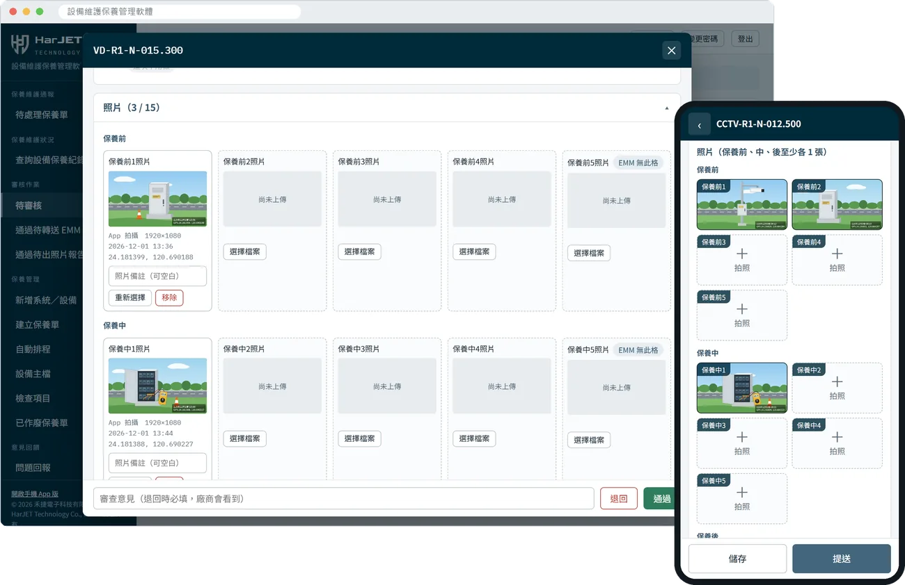
畫面為示範資料
手機拍照回報、AI 先審一遍、照片自動歸檔，到分層權限與操作紀錄，一支影片帶過。
定期保養的點位多、協力廠商多，照片與檢查表往往散在通訊軟體與紙本之間。把回報、審核、歸檔放在同一個系統，少掉來回補件的時間。
哪一張是哪台設備、哪個月的，要靠人工一張張對。
被退件再回現場補拍，一來一往就是好幾天。
進度散在各家廠商手上，沒有一個地方看得到全貌。
點位一多，光靠人眼很難記得每一張照片。
保養單依排程自動開出；廠商在現場回報，送出前系統先把關；審核人員線上通過或退回；照片與紀錄自動歸檔。
依保養週期排程，每月自動開出下個月的保養單。
掃 QR Code 進設備，拍照、填檢查表。
缺照片、漏勾項目，送出前系統先擋下。
通過，或退回並寫明要補什麼。
照片自動歸檔，紀錄可匯出、可轉送。
檢查表、保養週期、應拍照片清單都可以依契約規定設定；系統部署於自有主機，資料自行保管。
掃 QR Code、輸入設備編號、依機房選擇，路側與機房設備都適用。
拍照當下自動加上日期時間與座標，時間以系統為準，不必另裝浮水印相機。
隧道、山區收不到訊號時，照片先存在手機，恢復連線後自動補傳。
缺保養前中後照片、檢查項目沒勾、量測值沒填，送出前就會提醒。
審核人員通過或退回並附意見；廠商修改後重新提送，每一步都有簽核紀錄。
依每月、每季、每半年、每年排到履約期末，每月自動開出下個月的保養單。
自動比對歷史照片；疑似重複使用或經過後製的，會標示給審核人員。
依應拍照片清單先看一遍，列出可能缺少的照片；通過與否仍由人決定。
保養紀錄匯出 Word、PDF、CSV；照片依區分、系統、月份、日期自動分資料夾。
管理者、審核人員、協力廠商各有權限；每家廠商只看得到自己的保養單。
登入認證碼、密碼錯誤鎖定、閒置自動登出、完整操作紀錄、定期自動備份。
Android 提供安裝檔，iPhone 加入主畫面即可；電腦用瀏覽器就能操作。
不必另裝浮水印相機、不必回辦公室整理照片。從找到設備、拍照、填檢查表到提送，都在同一個 App 裡完成。
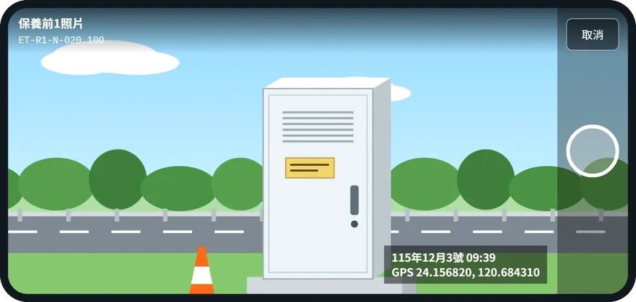
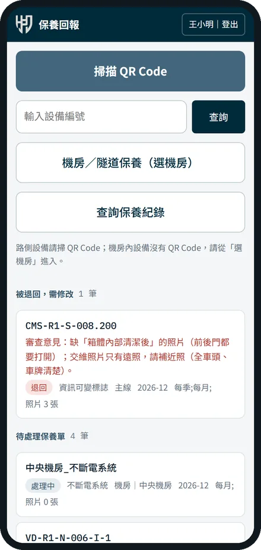
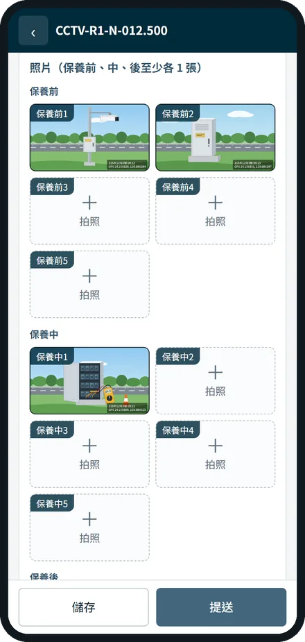
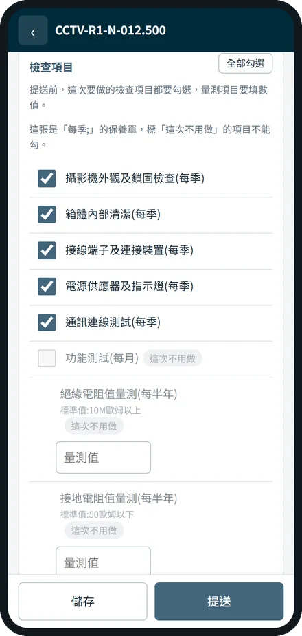
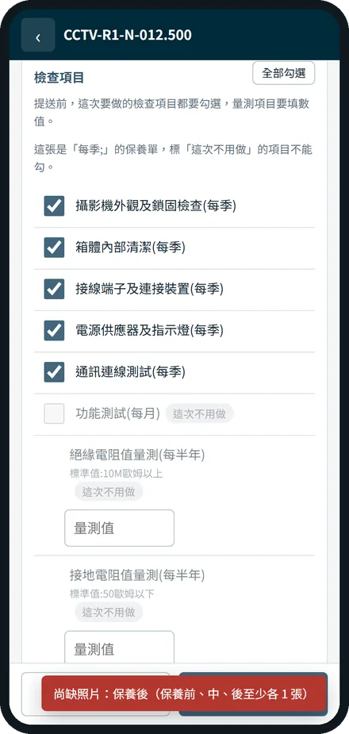
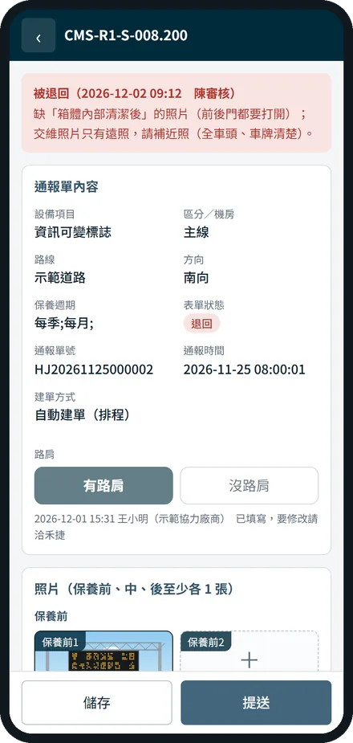
廠商提送的保養單集中在待審核清單；通過或退回都留下簽核紀錄。保養單依排程自動開出，設備與檢查表可以整批維護。
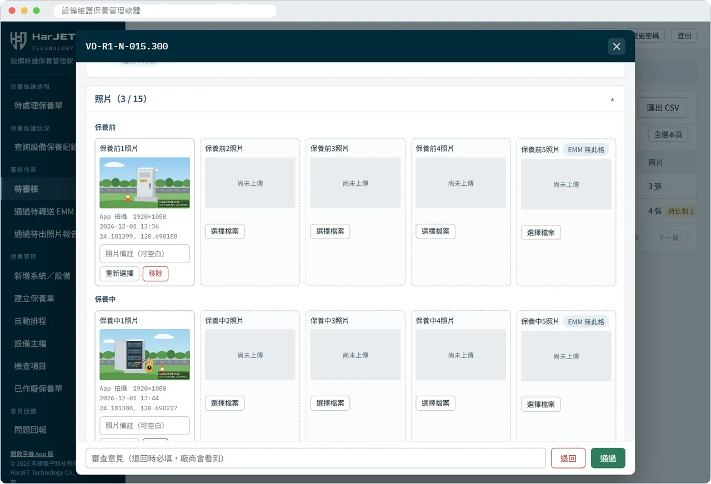
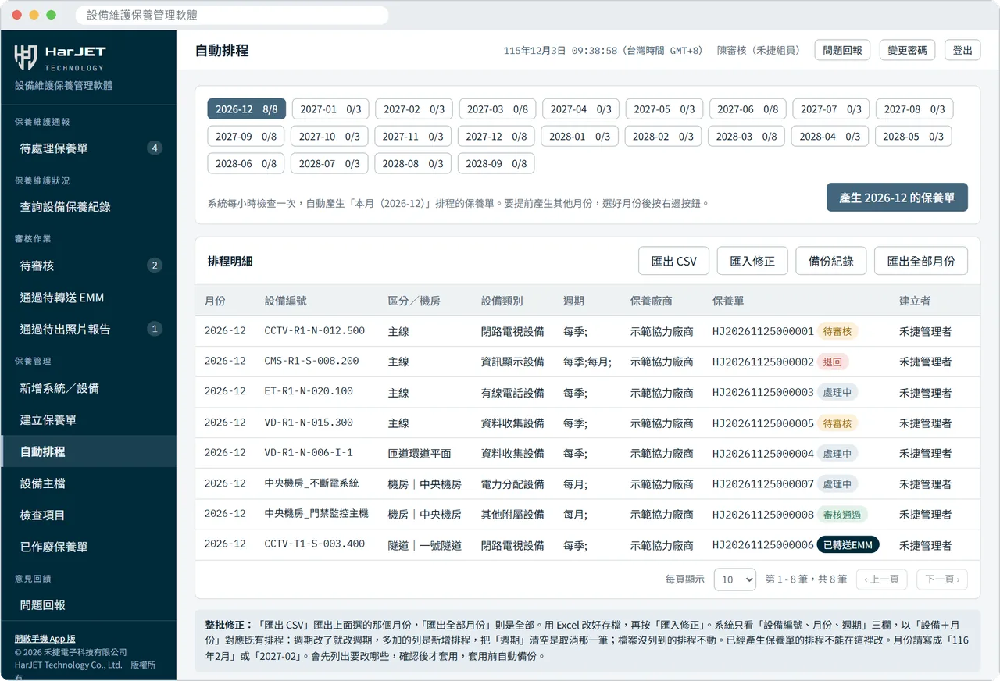
可依月份、日期、區分、機房、廠商篩選，並顯示照片張數與重複警示。
退回必填意見；通報內容、檢查表、照片、簽核紀錄都在同一頁。
多張匯出 Word 打包、多張排在一起列印成 PDF，也可以一次作廢多張。
依排程自動開單；臨時加開可勾選設備或依條件整批建立。
設備、檢查項目、排程都能用 Excel 修改後匯回；套用前自動備份，匯錯可以改回。
保養單提送時鎖定當時的檢查表；之後檢查表改版，已提送的單不受影響。
審核人員按一下，AI 對照「這種設備、這個週期應該拍哪些照片」，列出可能缺少的照片與每一張照片的內容。通過或退回，仍由審核人員決定。
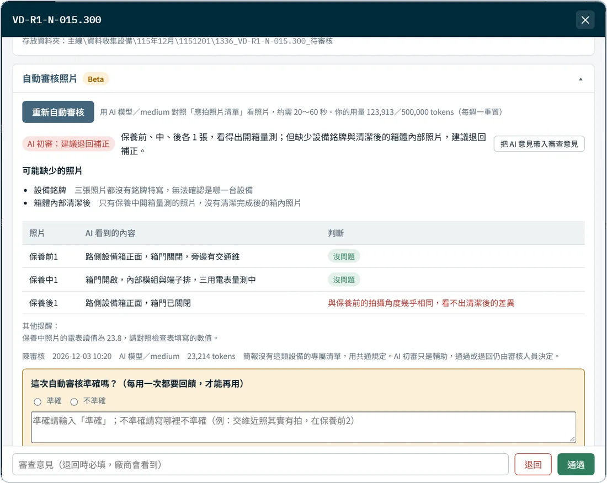
畫面為示範資料；AI 回覆內容為示範範例
照片一上傳，系統就依設備與日期建好資料夾、取好檔名；審核狀態改變，資料夾名稱跟著更新。不必再靠人工分類、改檔名。
保養照片 ├─ 主線 ← 區分 │ └─ 閉路電視設備 ← 系統 │ └─ 115年12月 ← 月份 │ └─ 1151203 ← 日期 │ └─ 0912_CCTV-R1-N-012.500 _待審核 │ ├─ 保養前 │ │ ├─ CCTV-R1-N-012.500_保養前1.jpg │ │ └─ CCTV-R1-N-012.500_保養前2.jpg │ ├─ 保養中 │ └─ 保養後 ├─ 隧道 ─ 一號隧道 … 0918_CCTV-T1-S-003.400 _已核定 ├─ 機房 ─ 中央機房 … 1602_門禁監控主機 _已退回 └─ 尚未提送 ← 還沒提送的先放這裡
誰能看、誰能改、誰能核准，分得清楚；每一個動作都留下紀錄。審核或標記錯了，由最高權限把保養單退回前一步，原因留在簽核紀錄。
現場回報：拍照、填檢查表、提送；修改被退回的保養單。只看得到自己公司的保養單。
審核通過或退回、使用 AI 輔助審核；建立保養單、自動排程；維護設備主檔與檢查表、匯出。
帳號與廠商的核准、停用、重設密碼；把保養單退回前一個審核狀態；操作紀錄、AI 管理、公告與系統備份。
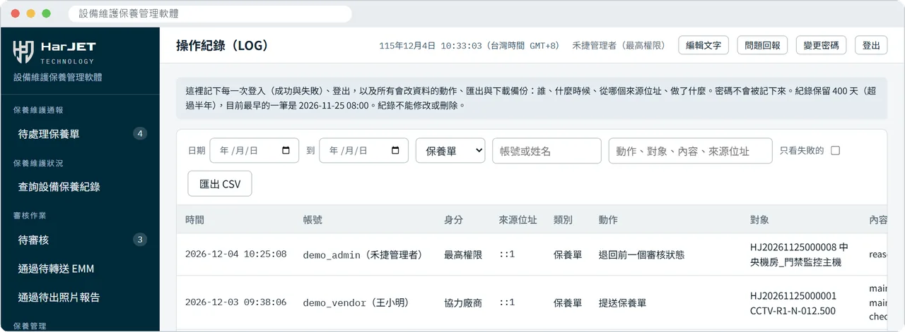
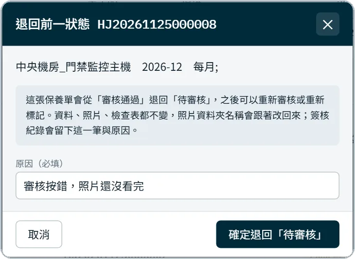
畫面為示範資料
這套軟體是從維護專案的實務流程中發展出來的：點位多、廠商多、每個月都要交照片與檢查表。
路側、隧道、機房等大量設備的定期保養。
各家只看自己的保養單，進度集中在一處掌握。
契約要求檢附保養前、中、後照片與檢查表。